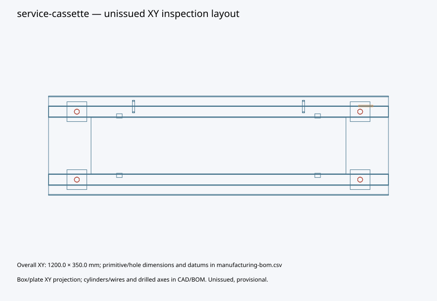
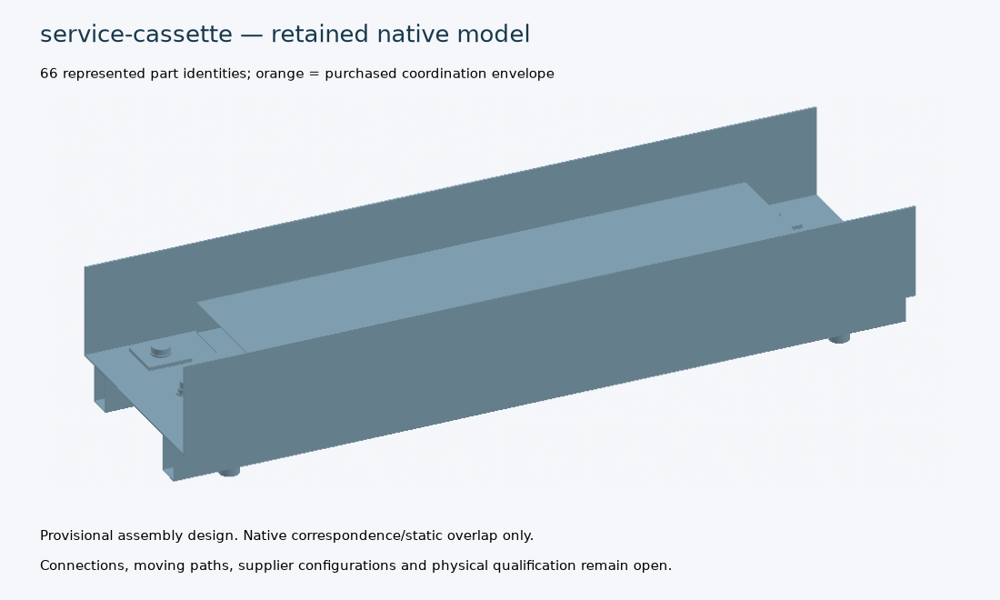

Provisional engineering development. No complete train, civil system, manufacturing qualification or physical release is claimed.
414 scoped requirement records: 69 Baghdad reference parts plus 345 legacy/unreconciled records. 21 sourced facts. 38 completed trials; 0 qualified components.
Automatic parameter/design generation and scoped verification for two registered pilot assemblies plus executable cassette software; remaining components require generator/evaluator development
Baseline and requirement inventory | Full progress and open work | Executed test receipt | Test log | Original evidence | Checksums
Exact candidate d150174969450621308d50ec2ae9eb0c958dcfcc4f9777d3ba9759cedaf19237. Native state: completed. Provisional research representative; all assembly closure and qualification holds remain applicable
Part/joint definition | Checks and unresolved requirements | Manufacturing BOM and dimensions | Unexecuted QA plan


Native FreeCAD | Compressed STEP — correspondence/static overlap checks only; bought-out items may be coordination envelopes.
Exact candidate 9df5a6627b18c5b633665e3f2ce5e37f278ca359218c1a7792293bf256d29128. Native state: completed. Provisional research representative; all assembly closure and qualification holds remain applicable
Part/joint definition | Checks and unresolved requirements | Manufacturing BOM and dimensions | Unexecuted QA plan


Native FreeCAD | Compressed STEP — correspondence/static overlap checks only; bought-out items may be coordination envelopes.
| Family | Variables | State | Represented mass kg | Failed / held checks |
|---|---|---|---|---|
| bearing-seat | {"bearing_family": "uk-spherical-candidate", "bolt_diameter_m": 0.024, "plate_thickness_m": 0.03} | hold | 200.32007241975455 | bearing-continuous-temperature-applicability |
| bearing-seat | {"bearing_family": "elastomeric-reference", "bolt_diameter_m": 0.024, "plate_thickness_m": 0.02} | failed | 172.28615297297375 | bearing-continuous-temperature-applicability |
| bearing-seat | {"bearing_family": "uk-spherical-candidate", "bolt_diameter_m": 0.027, "plate_thickness_m": 0.04} | hold | 229.74609431600862 | bearing-continuous-temperature-applicability |
| bearing-seat | {"bearing_family": "elastomeric-reference", "bolt_diameter_m": 0.02, "plate_thickness_m": 0.02} | failed | 170.7624227946156 | bearing-continuous-temperature-applicability |
| bearing-seat | {"bearing_family": "uk-spherical-candidate", "bolt_diameter_m": 0.02, "plate_thickness_m": 0.04} | hold | 226.84849147070005 | bearing-continuous-temperature-applicability |
| bearing-seat | {"bearing_family": "elastomeric-reference", "bolt_diameter_m": 0.027, "plate_thickness_m": 0.03} | failed | 201.72009860992665 | bearing-continuous-temperature-applicability |
| bearing-seat | {"bearing_family": "elastomeric-reference", "bolt_diameter_m": 0.02, "plate_thickness_m": 0.04} | failed | 226.84849147070005 | bearing-continuous-temperature-applicability |
| bearing-seat | {"bearing_family": "elastomeric-reference", "bolt_diameter_m": 0.027, "plate_thickness_m": 0.04} | failed | 229.74609431600862 | bearing-continuous-temperature-applicability |
| bearing-seat | {"bearing_family": "uk-spherical-candidate", "bolt_diameter_m": 0.027, "plate_thickness_m": 0.03} | hold | 201.72009860992665 | bearing-continuous-temperature-applicability |
| bearing-seat | {"bearing_family": "elastomeric-reference", "bolt_diameter_m": 0.027, "plate_thickness_m": 0.02} | failed | 173.69410290384468 | bearing-continuous-temperature-applicability |
| bearing-seat | {"bearing_family": "uk-spherical-candidate", "bolt_diameter_m": 0.024, "plate_thickness_m": 0.04} | hold | 228.35399186653538 | bearing-continuous-temperature-applicability |
| bearing-seat | {"bearing_family": "elastomeric-reference", "bolt_diameter_m": 0.024, "plate_thickness_m": 0.03} | failed | 200.32007241975455 | bearing-continuous-temperature-applicability |
| bearing-seat | {"bearing_family": "uk-spherical-candidate", "bolt_diameter_m": 0.024, "plate_thickness_m": 0.02} | hold | 172.28615297297375 | bearing-continuous-temperature-applicability |
| bearing-seat | {"bearing_family": "elastomeric-reference", "bolt_diameter_m": 0.024, "plate_thickness_m": 0.04} | failed | 228.35399186653538 | bearing-continuous-temperature-applicability |
| bearing-seat | {"bearing_family": "elastomeric-reference", "bolt_diameter_m": 0.02, "plate_thickness_m": 0.03} | failed | 198.8054571326578 | bearing-continuous-temperature-applicability |
| bearing-seat | {"bearing_family": "uk-spherical-candidate", "bolt_diameter_m": 0.02, "plate_thickness_m": 0.02} | hold | 170.7624227946156 | bearing-continuous-temperature-applicability |
| bearing-seat | {"bearing_family": "uk-spherical-candidate", "bolt_diameter_m": 0.027, "plate_thickness_m": 0.02} | hold | 173.69410290384468 | bearing-continuous-temperature-applicability |
| bearing-seat | {"bearing_family": "uk-spherical-candidate", "bolt_diameter_m": 0.02, "plate_thickness_m": 0.03} | hold | 198.8054571326578 | bearing-continuous-temperature-applicability |
| cassette-control | {"variant": "bitmask"} | offline-tests | None | |
| cassette-control | {"variant": "branch"} | offline-tests | None | |
| service-cassette | {"bolt_diameter_m": 0.016, "duct_area_m2": 0.03, "rail_wall_m": 0.004} | failed | 39.52903700730088 | duct-packaging |
| service-cassette | {"bolt_diameter_m": 0.02, "duct_area_m2": 0.03, "rail_wall_m": 0.003} | failed | 36.975727033813044 | duct-packaging |
| service-cassette | {"bolt_diameter_m": 0.02, "duct_area_m2": 0.01, "rail_wall_m": 0.003} | screened-with-open-design-requirements | 35.56272703381305 | |
| service-cassette | {"bolt_diameter_m": 0.02, "duct_area_m2": 0.01, "rail_wall_m": 0.004} | screened-with-open-design-requirements | 38.77933469955695 | |
| service-cassette | {"bolt_diameter_m": 0.016, "duct_area_m2": 0.03, "rail_wall_m": 0.003} | failed | 36.30383530122479 | duct-packaging |
| service-cassette | {"bolt_diameter_m": 0.016, "duct_area_m2": 0.02, "rail_wall_m": 0.002} | screened-with-open-design-requirements | 32.22141359514869 | |
| service-cassette | {"bolt_diameter_m": 0.02, "duct_area_m2": 0.02, "rail_wall_m": 0.003} | screened-with-open-design-requirements | 36.269227033813046 | |
| service-cassette | {"bolt_diameter_m": 0.016, "duct_area_m2": 0.03, "rail_wall_m": 0.002} | failed | 32.92791359514869 | duct-packaging |
| service-cassette | {"bolt_diameter_m": 0.02, "duct_area_m2": 0.02, "rail_wall_m": 0.004} | screened-with-open-design-requirements | 39.485834699556946 | |
| service-cassette | {"bolt_diameter_m": 0.02, "duct_area_m2": 0.01, "rail_wall_m": 0.002} | screened-with-open-design-requirements | 32.19539936806915 | |
| service-cassette | {"bolt_diameter_m": 0.016, "duct_area_m2": 0.01, "rail_wall_m": 0.002} | screened-with-open-design-requirements | 31.514913595148688 | |
| service-cassette | {"bolt_diameter_m": 0.016, "duct_area_m2": 0.02, "rail_wall_m": 0.004} | screened-with-open-design-requirements | 38.82253700730088 | |
| service-cassette | {"bolt_diameter_m": 0.016, "duct_area_m2": 0.02, "rail_wall_m": 0.003} | screened-with-open-design-requirements | 35.59733530122478 | |
| service-cassette | {"bolt_diameter_m": 0.016, "duct_area_m2": 0.01, "rail_wall_m": 0.004} | screened-with-open-design-requirements | 38.11603700730088 | |
| service-cassette | {"bolt_diameter_m": 0.016, "duct_area_m2": 0.01, "rail_wall_m": 0.003} | screened-with-open-design-requirements | 34.89083530122478 | |
| service-cassette | {"bolt_diameter_m": 0.02, "duct_area_m2": 0.03, "rail_wall_m": 0.004} | failed | 40.19233469955695 | duct-packaging |
| service-cassette | {"bolt_diameter_m": 0.02, "duct_area_m2": 0.03, "rail_wall_m": 0.002} | failed | 33.60839936806914 | duct-packaging |
| service-cassette | {"bolt_diameter_m": 0.02, "duct_area_m2": 0.02, "rail_wall_m": 0.002} | screened-with-open-design-requirements | 32.901899368069145 |
| Fact | Value / unit | Source and scope |
|---|---|---|
| connector.part | "M80-4000000F1-10-326-00-000" part-number | harwin-power; Product identity; LV cassette reference; no traction HV use |
| connector.origin | "GB" country-code | harwin-power; Country of Origin; Published exact-part origin; delivered lot certification remains required |
| connector.contacts | 10 count | harwin-power; Number of Power/Coax Contacts; Exact female connector |
| connector.dimensions | [0.05, 0.0055, 0.013] m | harwin-power; Dimensions: millimetres converted to metres; Coordination envelope; purchased internals not modelled |
| connector.mass | 0.005722 kg | harwin-power; Weight: grams converted to kilograms; Published component mass; excludes cable and mating connector |
| connector.current_max | 15.0 A/contact | harwin-power; Current Rating; Headline maximum; simultaneous loading/temperature derating unresolved |
| connector.temperature | [-55.0, 125.0] degC | harwin-power; Operating Temperature; Connector only; not a rating for the complete cassette |
| bearing.reference_temperature | [-25.0, 50.0] degC | freyssinet; Chloroprene minimum and continuous maximum; Family reference only; +70C is peak, not continuous |
| bearing.reference_peak_temperature | 70.0 degC | freyssinet; Maximum peak temperature; Duration and combined performance require supplier confirmation |
| bearing.uk_manufacture | true boolean | ekspan; Designed and manufactured in the UK; Candidate supplier; exact bearing/temperature/rating to be offered |
| steel.yield_by_thickness | [[0.016, 355000000.0], [0.04, 345000000.0]] m,Pa | british-steel; Minimum yield strength for nominal thickness bands; S355ML reference grade; no automatic plate/mill or hot-temperature qualification |
| bolts.m20_benchmark | 94100.0 N | sci-bolts; Worked shear example; Method check for stated assumptions, not an assembly rating |
| climate.baghdad_mean_july_max | 43.0 degC | iraq-climate; Monthly mean maximum for July in Baghdad; Climatological context, not an extreme design value |
| climate.iraq_summer_max_context | [43.0, 50.0] degC | iraq-climate; June-August maxima context; Country-level context; location/return period not established |
| train.mass_cases | [384000.0, 460800.0] kg | engineering/generative_design/data/architecture-feedback.json; /six_car_mass_cases_kg; Baghdad six-car planning and +20% sensitivity; never transfer to LM3 |
| train.car_length | 18.5 m | engineering/data/baghdad-reference-parts.json; /parts/id=ME-01/interface; Nominal module allocation, not adopted swept gauge |
| climate.ambient | 50.0 degC | engineering/data/baghdad-reference-parts.json; /parts/id=ME-11/interface; Existing Baghdad HVAC reference |
| roof.surface_temperature | 85.0 degC | engineering/continuous_design/expansion.py; CONTEXTS/mechanical-roof-study; Separate roof context; not air temperature |
| steel.elastic_modulus | 210000000000.0 Pa | engineering/factory_examples/data/basis.json; /assumptions/steel_elastic_modulus_pa; Room-temperature elastic research assumption |
| steel.density | 7850.0 kg/m3 | engineering/factory_examples/data/basis.json; /assumptions/steel_density_kg_m3; Nominal steel mass assumption |
| bolts.stress_areas | {"0.016": 0.000157, "0.020": 0.000245, "0.024": 0.000353, "0.027": 0.000459} m2 | engineering/generative_design/data/mechanical-detail-space.json; /bolt_request/tensile_stress_area_m2; Nominal coarse-thread reference; delivered grade/origin open |
411 scoped component records still need component-specific generators/evaluators. Work orders retain all seven design/acceptance stages as open.